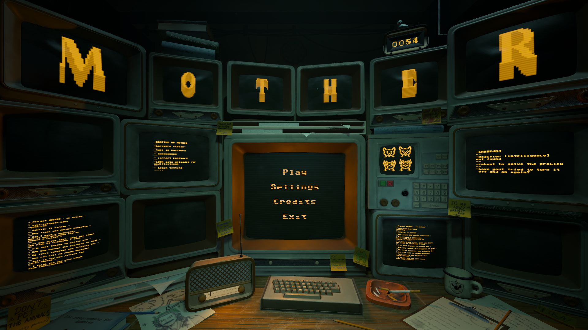
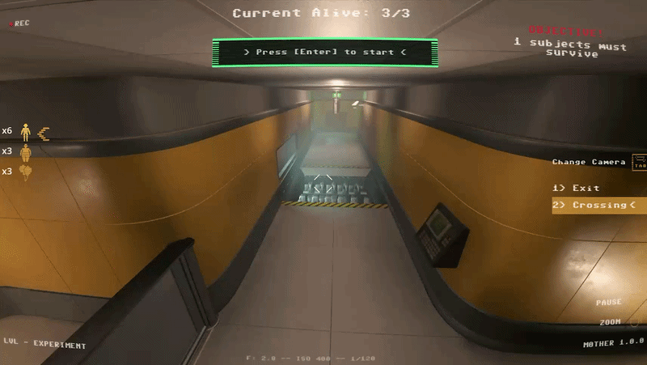

M0THER
Camera rotations and raycasts who could've thought it would be such a nightmare.

Overview
Inspired by games like Lemmings and Portal, M0THER will have you watchfully guiding adorable little critters by giving them crazy abilities! Guide your idiot children through the death maze of the testing facility! The subjects make up for idiocy in cuteness.. But that does not generally do much for them when getting shredded.
Visit Itch.io page!
Technical Breakdown
For this game, I pushed myself by taking responsibility for most of the camera-related work, including camera transitions, object highlighting from the camera's point of view, and more. The cameras are a central part of the game, so when I was coding them, I had to make sure they were both efficient and easy for my team to use in their own levels.
I also worked on a few additional features, such as the level select in the main menu and the modification wheel within the different levels. I'm currently working on adding controller support to the game as well. It would've launched alongside the game, but I unfortunately fell ill last weekend of production, which was when I planned to finish up the remaining work for full support. It will, however, be added in a future patch.
Main menu
Despite being a core feature in every game we decided not to lay too much time on the main menu until the very end of the project. It was at that time we decided that we should have a interactable 3D main menu.
I decided to take on the challenge to create such a thing as I had already been working on a lot of stuff with raycasts like the cameras and traps.
So how did I go about making the main menu? Well I took some of my previous camera code
and shoved it into our temporary main menu. We already had a 3D scene with a bunch of the screen so I just needed to give them a collision shape and then make it so my raycast from the camera in the main menu scene was looking for that collision layer.
Once that was done I had to find a way to work with the materials on the screens so they could go from being a black screen with maybe some orange text into actually showing the levels.
Luckily for me the artists on the team had setup the TV:s with two textures.
One of the texture was for the screen which was exactly what I needed. So I took that one and made my own material that just had a simple PNG of the level except it was rotate 90 degrees due to how the normals on the screen were set up.

Cameras and Traps
This was the longest I had ever sat down with one thing and one thing only and actually enjoyed every second of it!

Modification Wheel
After working on the camera system, next up was the selection wheel. This wheel was meant to help us get away from binding each modification to a different key on the keyboard thus making the game way more difficult for potential controller support.
So after disccusing it with the team we decided to take this approach. The wheel is to be used as a tool to select what modification to use on the creatures as they run around the map.
We draw the wheel entirely in the Godot function _draw() because that means we can limit the amount of times it needs to be told "hey don't do anything with this" and instead focus on telling it when it should be doing something.
If we add for example an arrow to the wheel we can queue_redraw() it so it places the arrow once at the right place same with the icons. It was a very performative way of handling it and I'm glad that I discovered it so early on.

What I Learned
Reflection section. Employers love this.